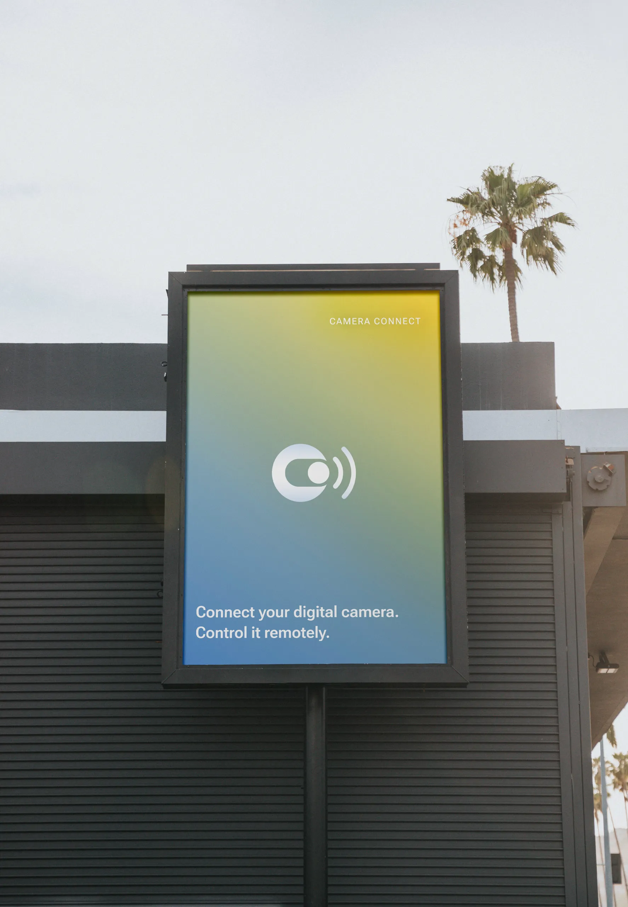
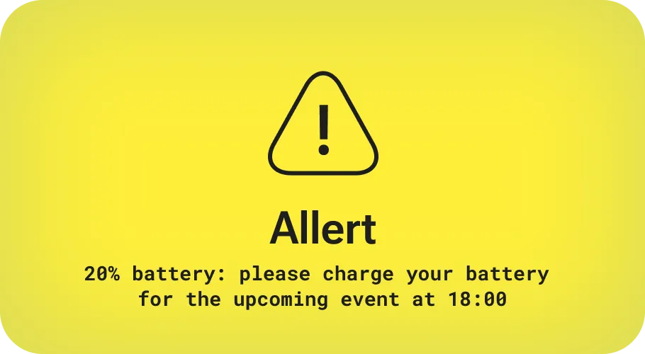
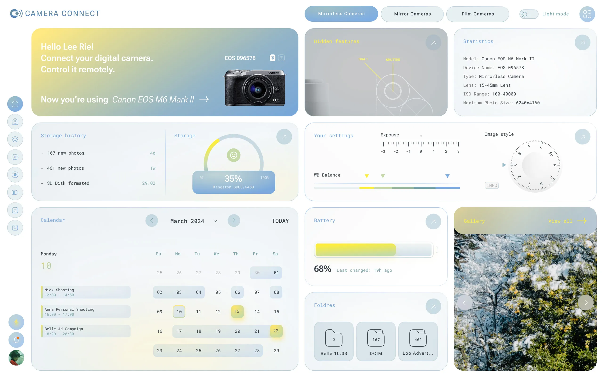
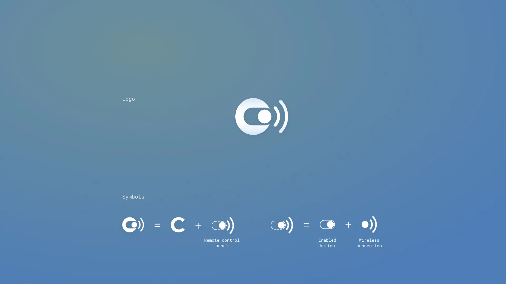
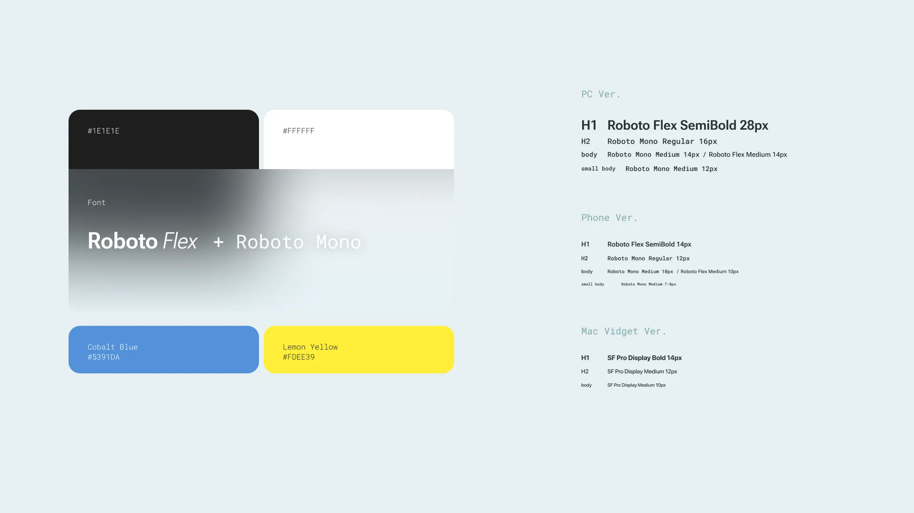
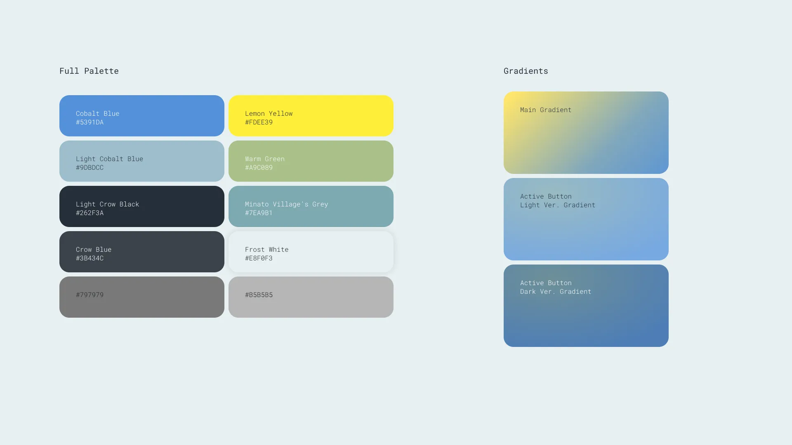
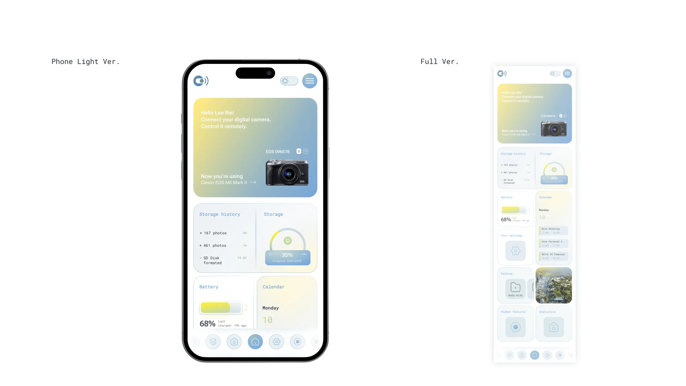
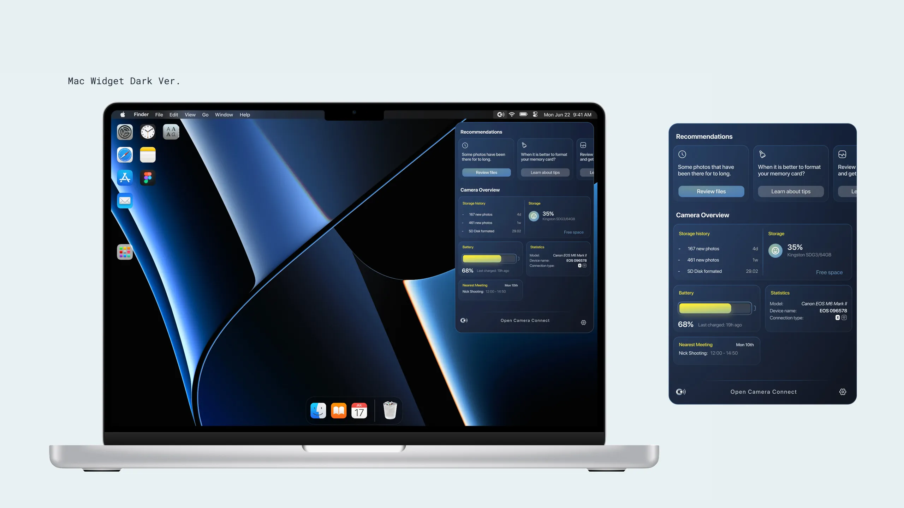
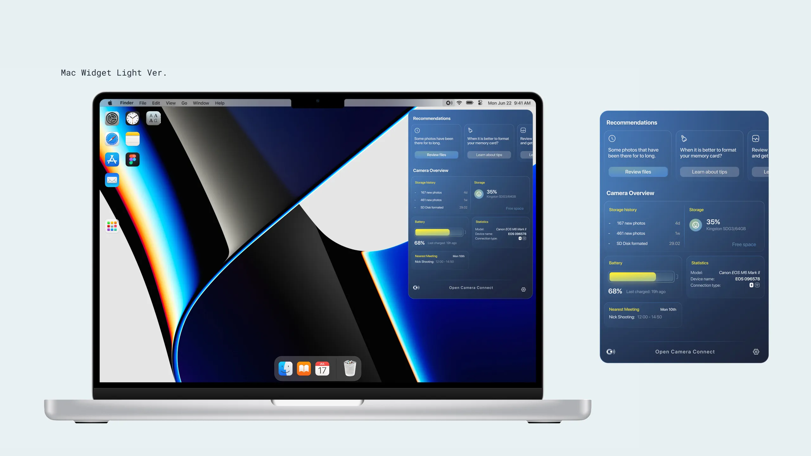
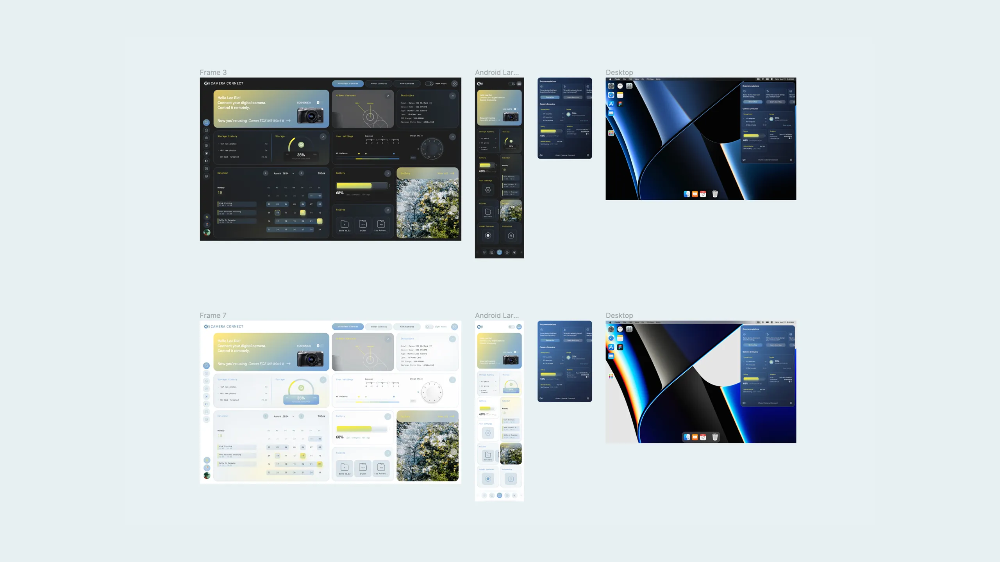

Nastia Honcharenko
Graphic Designer
App Design, Branding Identity
Kharkiv, Ukraine, 2024
UI/UX class, STEP IT Academy
Camera Connect is a smart app that allows you to connect to your camera via Wi-Fi or Bluetooth and view statistics, manage settings and storage of your camera.
For example, a photographer has a shoot tomorrow Camera Connect will send a reminder that the last time camera was connected to the widget, the battery was low. The app is synced with your Google or Apple calendar and displays the events you’ve added.

I designed the interface as a centralized dashboard that brings the camera’s controls and information into one accessible space. The system includes desktop, mobile, light-mode, and dark-mode versions with graphics resembling camera hardware.



Camera Connect’s visuals balance technical precision with a soft, approachable interface. I introduced soft gradients, rounded modules, and muted colors to make a data-heavy interface feel more intuitive and welcoming.






